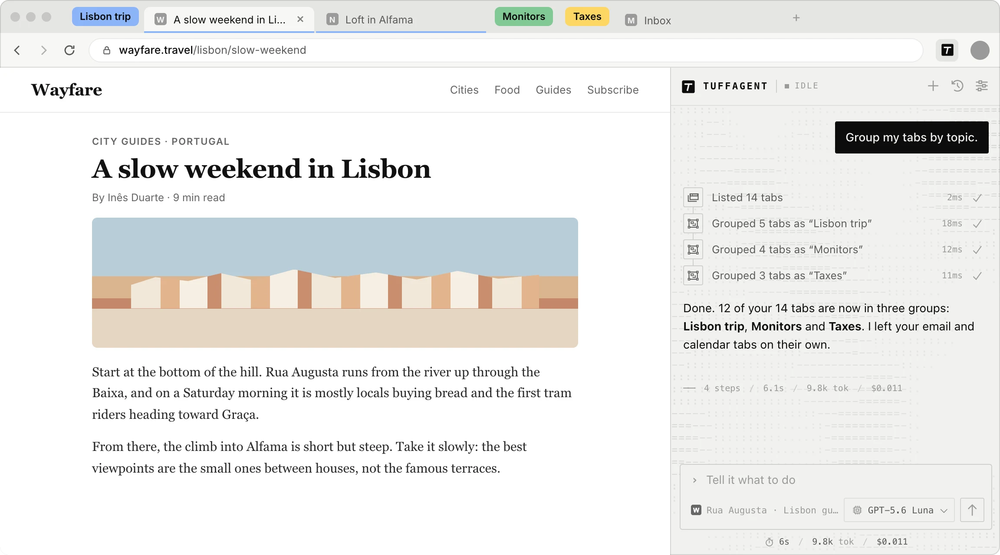
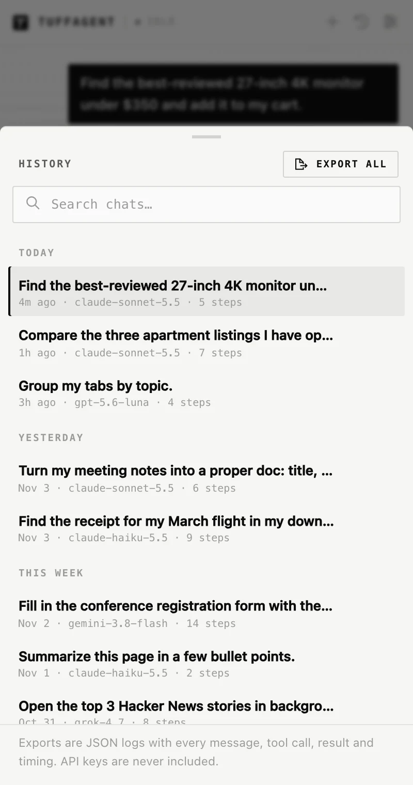

Features
What TuffAgent can do
TuffAgent works the browser through a set of tools. It can read and act on pages, manage your tabs, and use your bookmarks, history and downloads when a task calls for it. This page goes through each part.
Tools
The tools it has to work with
The model picks from these on every step. Site packs add more on Google Docs and Canva.
Tabs
List, open, switch between, close and group tabs.
Navigation
Go to a URL, go back or forward, and reload.
Reading
Page snapshots in reading order, text search on long pages, and finding elements by their label.
Acting
Click, type, press keys, paste formatted text, go through menus, pick from dropdowns, drag, scroll and hover.
Vision
Screenshots with every clickable element tagged, for models that can read images.
Scripting
Run JavaScript in the page or any frame when the other tools can’t do the job.
Browser data
Search and create bookmarks, search your history, and check recent downloads.
Planning
A checklist for long tasks, so no part of the request gets skipped.

Reading pages
It reads a page the way you would.
Before it acts, TuffAgent takes a snapshot of the page: the text, headings and controls, in the order you’d read them.
- Tables come through row by row, and links stay inline with the sentence they’re in.
- When a page is too long to send in full, what’s on screen and any open dialog come first.
- It finds clickable things the way a person does: buttons and links, but also elements that only show a pointer cursor, custom checkboxes, and controls inside shadow DOM and frames.
- Icon-only buttons get a name from their icon, and unlabeled fields get one from the text just before them.
- For long pages, a search returns just the lines that mention what it’s looking for.
Acting
It clicks what it means to click.
Most mistakes browser agents make come from aiming at the wrong element. TuffAgent is careful about it.
- Elements are targeted by their visible label, such as “Add to cart”, plus a nearby label when the same text appears more than once.
- Exact matches win. A partial match is used only when it’s the only one, and never for something that would lock, delete, remove or move an item.
- If a cookie banner or sticky header covers a button, it clicks a visible part of the button or scrolls it into the clear.
- Typing replaces a field’s text and reads it back. Date, time and dropdown fields accept plain values like “March 14” or “1:30 PM”.
- Drags report whether the item actually moved, and a drag that changed nothing counts as a failure.
- Every action reports what changed: what appeared, what was checked or expanded, and any new messages on the page.
Recovery
When something goes wrong, it keeps going.
Long tasks run into busy servers, pop-ups and pages that don’t behave. These are handled without you stepping in.
Retries
Model calls are retried with backoff after rate limits, busy providers, dropped connections, stalled streams and empty replies.
Long chats
If a chat outgrows the model’s context window, the request is retried with a shorter history instead of failing.
Stuck patterns
Repeating the same call with the same result adds a note telling the model to try something else. Every 20 rounds, the original request is repeated so the goal stays in view.
Dialogs and timeouts
Pop-up alerts and confirmations are answered and reported so they can’t freeze a run, and every page call has a time limit.
History and logs
Every chat is saved, and you can export it.
The line under the composer shows the chat’s working time, tokens and cost, and updates live during a run. The clock button opens your history, where you can search by title or model, reopen a chat, or export it.
- An export is a JSON file with every message, tool call and result, the page URL after each action, model timings, token use and cost.
- It also records the settings and system prompt that were in effect.
- API keys are never included.

Settings
Settings
Open them with the sliders button at the top of the panel.
| Setting | Default | What it does |
|---|---|---|
| Model | Claude Haiku 5.5 | Any OpenRouter model that supports tools. The picker is also in the composer. |
| Reasoning | Auto | Effort for models that think before answering: Auto, Low, Medium or High. |
| Theme | System | System, Light or Dark. |
| Loader | Line | How the composer shows the agent working: a soft line along its edge, or an ASCII meter. |
| Fastest providers | On | Sends each request to the host with the lowest latency for that model. |
| Page highlight | On | The frame and cursor on pages the agent is working in. |
| Trusted input | On | Real mouse and keyboard events through the DevTools protocol, for sites that ignore simulated ones. Chrome shows a debugging bar while the agent acts. Not available in Firefox. |
| Step limit | 100 | Model rounds per request. Can be turned off. |
| Custom instructions | None | Text added to every request, for preferences like a search engine or a tone of voice. |
| Chat history | – | How many chats are saved and how much space they take, with Delete all. |
When a run fails for a reason you can fix, the error tells you how: a rejected key offers Update key, an empty balance offers Add credits and Change model, and a model that can’t take the request offers Change model.
Shortcuts
Keyboard shortcuts
On Windows and Linux, use Ctrl in place of ⌘. Settings lists the keys your browser actually has bound.
| Keys | Action |
|---|---|
| ⌘ ⇧ Y | Open the panel (Chrome) or show and hide the sidebar (Firefox) |
| ⏎ | Send |
| ⇧ ⏎ | New line |
| ↑ ↓ | Step through earlier prompts, in an empty composer |
| Esc | Stop the agent, or close a sheet |
| ⌘ ⇧ O | New chat |
Add TuffAgent to your browser.
Setup takes a couple of minutes: install the extension, paste an OpenRouter key, and open the sidebar with ⌘ ⇧ Y, or Ctrl Shift Y on Windows and Linux.
Prefer to run it from source? See the manual install steps.